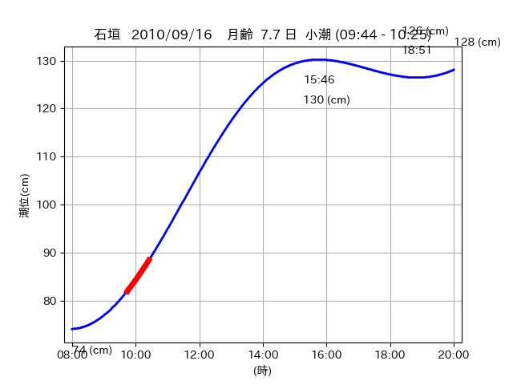

<!DOCTYPE html>
<html>
<head>
    
    <meta http-equiv="content-type" content="text/html; charset=UTF-8" />
    
        <script>
            L_NO_TOUCH = false;
            L_DISABLE_3D = false;
        </script>
    
    <style>html, body {width: 100%;height: 100%;margin: 0;padding: 0;}</style>
    <style>#map {position:absolute;top:0;bottom:0;right:0;left:0;}</style>
    <script src="https://cdn.jsdelivr.net/npm/leaflet@1.9.3/dist/leaflet.js"></script>
    <script src="https://code.jquery.com/jquery-3.7.1.min.js"></script>
    <script src="https://cdn.jsdelivr.net/npm/bootstrap@5.2.2/dist/js/bootstrap.bundle.min.js"></script>
    <script src="https://cdnjs.cloudflare.com/ajax/libs/Leaflet.awesome-markers/2.0.2/leaflet.awesome-markers.js"></script>
    <link rel="stylesheet" href="https://cdn.jsdelivr.net/npm/leaflet@1.9.3/dist/leaflet.css"/>
    <link rel="stylesheet" href="https://cdn.jsdelivr.net/npm/bootstrap@5.2.2/dist/css/bootstrap.min.css"/>
    <link rel="stylesheet" href="https://netdna.bootstrapcdn.com/bootstrap/3.0.0/css/bootstrap-glyphicons.css"/>
    <link rel="stylesheet" href="https://cdn.jsdelivr.net/npm/@fortawesome/fontawesome-free@6.2.0/css/all.min.css"/>
    <link rel="stylesheet" href="https://cdnjs.cloudflare.com/ajax/libs/Leaflet.awesome-markers/2.0.2/leaflet.awesome-markers.css"/>
    <link rel="stylesheet" href="https://cdn.jsdelivr.net/gh/python-visualization/folium/folium/templates/leaflet.awesome.rotate.min.css"/>
    
            <meta name="viewport" content="width=device-width,
                initial-scale=1.0, maximum-scale=1.0, user-scalable=no" />
            <style>
                #map_22fd17a4ffc3b7f62acfaac76d40a697 {
                    position: relative;
                    width: 2048.0px;
                    height: 1600.0px;
                    left: 0.0%;
                    top: 0.0%;
                }
                .leaflet-container { font-size: 1rem; }
            </style>
        
</head>
<body>
    
    
            <div class="folium-map" id="map_22fd17a4ffc3b7f62acfaac76d40a697" ></div>
        
</body>
<script>
    
    
            var map_22fd17a4ffc3b7f62acfaac76d40a697 = L.map(
                "map_22fd17a4ffc3b7f62acfaac76d40a697",
                {
                    center: [24.219, 124.031],
                    crs: L.CRS.EPSG3857,
                    ...{
  "zoom": 12,
  "zoomControl": true,
  "preferCanvas": false,
}

                }
            );

            

        
    
            var tile_layer_b3624426d7933afa422b4aa1d3927ea8 = L.tileLayer(
                "https://cyberjapandata.gsi.go.jp/xyz/seamlessphoto/{z}/{x}/{y}.jpg",
                {
  "minZoom": 0,
  "maxZoom": 18,
  "maxNativeZoom": 18,
  "noWrap": false,
  "attribution": "\u5730\u7406\u9662\u5730\u56f3",
  "subdomains": "abc",
  "detectRetina": false,
  "tms": false,
  "opacity": 1,
}

            );
        
    
            tile_layer_b3624426d7933afa422b4aa1d3927ea8.addTo(map_22fd17a4ffc3b7f62acfaac76d40a697);
        
    
            var marker_aa36d12ac85e8c02e546e5cb7bbc4486 = L.marker(
                [24.2381, 124.0424],
                {
}
            ).addTo(map_22fd17a4ffc3b7f62acfaac76d40a697);
        
    
            var icon_afa548abd78dea45318e337bf853da2f = L.AwesomeMarkers.icon(
                {
  "markerColor": "orange",
  "iconColor": "white",
  "icon": "info-sign",
  "prefix": "glyphicon",
  "extraClasses": "fa-rotate-0",
}
            );
        
    
        var popup_53b2db7db826611e9807a1525dcb1368 = L.popup({
  "maxWidth": "100%",
});

        
            
                var html_d68f7f0b31f25a8cd3fca061ad3dc459 = $(`<div id="html_d68f7f0b31f25a8cd3fca061ad3dc459" style="width: 100.0%; height: 100.0%;"><table><tr><td></td></tr><tr><td><center>20100916 No.1 </center></table></td></tr></table</div>`)[0];
                popup_53b2db7db826611e9807a1525dcb1368.setContent(html_d68f7f0b31f25a8cd3fca061ad3dc459);
            
        

        marker_aa36d12ac85e8c02e546e5cb7bbc4486.bindPopup(popup_53b2db7db826611e9807a1525dcb1368)
        ;

        
    
    
                marker_aa36d12ac85e8c02e546e5cb7bbc4486.setIcon(icon_afa548abd78dea45318e337bf853da2f);
            
    
            var poly_line_16b7f2746927ac8631cb5eb6bd2db9c9 = L.polyline(
                [[24.2381, 124.0424], [24.2268, 124.0396]],
                {"bubblingMouseEvents": true, "color": "#00FFFF", "dashArray": null, "dashOffset": null, "fill": false, "fillColor": "#00FFFF", "fillOpacity": 0.2, "fillRule": "evenodd", "lineCap": "round", "lineJoin": "round", "noClip": false, "opacity": 1.0, "smoothFactor": 1.0, "stroke": true, "weight": 3}
            ).addTo(map_22fd17a4ffc3b7f62acfaac76d40a697);
        
    
            var marker_eabb155b09ab85a8268d803fd0205d7e = L.marker(
                [24.2234, 124.0358],
                {
}
            ).addTo(map_22fd17a4ffc3b7f62acfaac76d40a697);
        
    
            var icon_94102a5f71e94ac75362e945a848d86d = L.AwesomeMarkers.icon(
                {
  "markerColor": "orange",
  "iconColor": "white",
  "icon": "info-sign",
  "prefix": "glyphicon",
  "extraClasses": "fa-rotate-0",
}
            );
        
    
        var popup_c5a3761b74b565a873c4a7ddaae81c89 = L.popup({
  "maxWidth": "100%",
});

        
            
                var html_6870895cd7a33283faa2df432ff6763a = $(`<div id="html_6870895cd7a33283faa2df432ff6763a" style="width: 100.0%; height: 100.0%;"><table><tr><td></td></tr><tr><td><center>20100916 No.2 </center></table></td></tr></table</div>`)[0];
                popup_c5a3761b74b565a873c4a7ddaae81c89.setContent(html_6870895cd7a33283faa2df432ff6763a);
            
        

        marker_eabb155b09ab85a8268d803fd0205d7e.bindPopup(popup_c5a3761b74b565a873c4a7ddaae81c89)
        ;

        
    
    
                marker_eabb155b09ab85a8268d803fd0205d7e.setIcon(icon_94102a5f71e94ac75362e945a848d86d);
            
    
            var poly_line_175e9feb4c263ff6b24dff9c6bfe4ce4 = L.polyline(
                [[24.2234, 124.0358], [24.2139, 124.0229]],
                {"bubblingMouseEvents": true, "color": "#00FFFF", "dashArray": null, "dashOffset": null, "fill": false, "fillColor": "#00FFFF", "fillOpacity": 0.2, "fillRule": "evenodd", "lineCap": "round", "lineJoin": "round", "noClip": false, "opacity": 1.0, "smoothFactor": 1.0, "stroke": true, "weight": 3}
            ).addTo(map_22fd17a4ffc3b7f62acfaac76d40a697);
        
    
            var marker_14fc284b9b7e58683cf2d4274a4474c8 = L.marker(
                [24.2149, 124.0247],
                {
}
            ).addTo(map_22fd17a4ffc3b7f62acfaac76d40a697);
        
    
            var icon_9b8bf87fe943c2fa825dfc0d3a4c1985 = L.AwesomeMarkers.icon(
                {
  "markerColor": "orange",
  "iconColor": "white",
  "icon": "info-sign",
  "prefix": "glyphicon",
  "extraClasses": "fa-rotate-0",
}
            );
        
    
        var popup_0f50e13af24489b3d31db824744f5610 = L.popup({
  "maxWidth": "100%",
});

        
            
                var html_5a31f164a429d23c0fc6be6069728364 = $(`<div id="html_5a31f164a429d23c0fc6be6069728364" style="width: 100.0%; height: 100.0%;"><table><tr><td></td></tr><tr><td><center>20100916 No.3 </center></table></td></tr></table</div>`)[0];
                popup_0f50e13af24489b3d31db824744f5610.setContent(html_5a31f164a429d23c0fc6be6069728364);
            
        

        marker_14fc284b9b7e58683cf2d4274a4474c8.bindPopup(popup_0f50e13af24489b3d31db824744f5610)
        ;

        
    
    
                marker_14fc284b9b7e58683cf2d4274a4474c8.setIcon(icon_9b8bf87fe943c2fa825dfc0d3a4c1985);
            
    
            var poly_line_9ed9a537aae9437f58e1153102d0d70e = L.polyline(
                [[24.2149, 124.0247], [24.224, 124.0372]],
                {"bubblingMouseEvents": true, "color": "#FF00FF", "dashArray": null, "dashOffset": null, "fill": false, "fillColor": "#FF00FF", "fillOpacity": 0.2, "fillRule": "evenodd", "lineCap": "round", "lineJoin": "round", "noClip": false, "opacity": 1.0, "smoothFactor": 1.0, "stroke": true, "weight": 3}
            ).addTo(map_22fd17a4ffc3b7f62acfaac76d40a697);
        
</script>
</html>